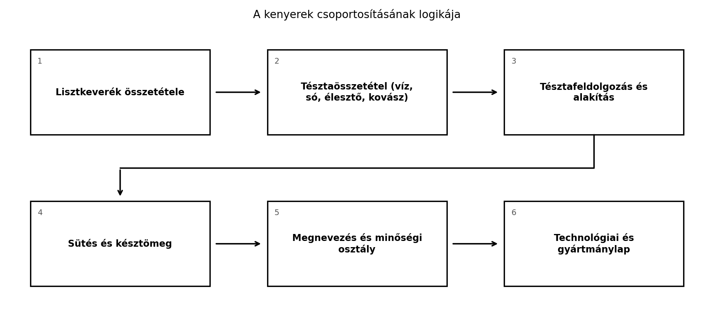

Hajnali műszakban a pék a kemencéből kivesz egy frissen sült kenyérfélét. A megrendelő azt kérdezi: „Ez fehér kenyér vagy félbarna? Miért hívják rozsos kenyérnek, ha csak 30% benne a rozsliszt? És miért kell a 700 g-os kenyér feladási tömegét kb. 795 g-ra állítani (a 12 % sütési és hűlési veszteség miatt), ha a boltban 700 g-os kenyér van a polcon?” Ezek a kérdések nemcsak a vevő tájékoztatásához kellenek, hanem a gyártás előtti anyagkiméréshez, a technológiai lap kitöltéséhez és a minőségvizsgálathoz is. Ebben az alfejezetben a kenyerek jellemzését, csoportosítását, anyagnormáit és minőségi követelményeit tanuljuk meg.
Képzelj el egy pékségi kenyérkosarat. Van benne kerek cipó, hosszúkás vekni, formában sütött kenyér, szeletelhető fehér kenyér és sötét, savanykás rozskenyér. A kosár mögött a gyártmánylapok és a technológiai lapok sorakoznak. A kenyér neve és minősége nem ötletszerű: azt az összetétele, az alakja, a tésztafeldolgozás módja és a sütés után mért jellemzői együtt határozzák meg. Ha a technológiai lapon csak annyi áll, hogy „kenyér”, abból nem lehet tudni, milyen lisztből, mennyi vízzel, milyen feladási tömeggel készült. Az anyagnorma és a csoportnorma éppen ezt a bizonytalanságot szünteti meg.
Definíció. A kenyér olyan sütőipari termék, amelyet gabonaőrleményből, vízből, élelmezési sóból, élesztőből vagy kovászból, továbbá megengedett segéd- és adalékanyagokból, dagasztással, kelesztéssel (erjesztéssel) és sütéssel állítanak elő. A kenyér jellegéből adódóan viszonylag nagyobb darabtömegű, jellemzően héjjal borított termék, bélzete szivacsos szerkezetű, ízét az élesztős erjedés vagy a kovász savanyodási folyamata mellett a felhasznált liszt és a só adja.
Szabály. A kenyerek megnevezése a Magyar Élelmiszerkönyv sütőipari termékekre vonatkozó irányelve szerint fejezi ki a felhasznált lisztfajtát vagy a készítési módot, például fehér kenyér, félbarna kenyér, rozsos kenyér, rozskenyér, teljes kiőrlésű kenyér, sovány kenyér, formakenyér (ellenőrizendő: a hatályos Magyar Élelmiszerkönyv sütőipari termékekre vonatkozó irányelve pontos megnevezései és feltételei). A megnevezés nem tévesztheti meg a fogyasztót: ha a termék nevében a „teljes kiőrlésű” kifejezés szerepel, akkor a felhasznált lisztnek ténylegesen a gabonaszem teljes kiőrléséből kell származnia, és a technológiának meg kell őriznie az erre jellemző rost- és ásványianyag-tartalmat.
Példa. A „rozsos kenyér” megnevezés azt jelenti, hogy a lisztkeverékben meghatározott arányban rozsliszt van, de a rozsliszt nem feltétlenül 100%. A „rozskenyér” megnevezés ezzel szemben jellemzően magasabb, akár döntő részben rozslisztből készült terméket jelöl (ellenőrizendő: a rozsos kenyér és rozskenyér elnevezések feltételei az aktuális sütőipari irányelvben). Aki ezt a különbséget nem ismeri, hibásan adhat meg anyagnormát, és félrevezetheti a vásárlót.
A kenyereket leggyakrabban a felhasznált lisztféleség és a tészta összetétele szerint soroljuk be:
| Csoport | Jellemző liszt vagy lisztkeverék | Főbb tulajdonságok | Példa (megnevezés jelölve) |
|---|---|---|---|
| Fehér kenyerek | BL 80 (fehér kenyérliszt; ellenőrizendő: MÉ lisztelőírás, lisztjelölések) | világos bél, enyhébb héj, élesztős íz | fehér kenyér, formakenyér |
| Félbarna kenyerek | BL 112 (félbarna kenyérliszt), vagy BL 80 + rozs-/teljes kiőrlésű liszt | középbarna bél, markánsabb íz | félbarna kenyér, büfékenyér |
| Rozsos kenyerek | búzaliszt + rozsliszt keveréke | savanykásabb, tömörebb bél, barnás héj | rozsos kenyér, rozsos cipó |
| Rozskenyerek | túlnyomóan rozsliszt | erős savanykás íz, tömör, nyirkosabb bél, hosszabb eltarthatóság | rozskenyér, rozscipó |
| Teljes kiőrlésű kenyerek | teljes kiőrlésű búza- vagy rozsliszt | magas rosttartalom, sötétebb bél, karakteres íz | teljes kiőrlésű kenyér |
Definíció. A kenyér összetételére utaló megnevezés akkor használható, ha a tészta liszt-összetevőinek aránya eléri az adott csoportra előírt értéket. A határértékek termékcsoportonként változnak, ezért mindig az üzemi gyártmánylap és a Magyar Élelmiszerkönyv sütőipari irányelve az irányadó (ellenőrizendő: a pontos lisztarányok és megnevezésfeltételek).
Figyelem. A csoportosítás nem azonos a színnel. A karamellszínűre sütött héj vagy a sötétre festett bél nem változtatja a termék csoportját. A félbarna kenyér nem attól félbarna, hogy a héja sötétebb, hanem azért, mert a lisztkeveréke nagyobb hamu- és korpatartalmú lisztből vagy rozslisztből áll.
Példa. Ha egy kenyér lisztkeveréke 70 tömeg% BL 80 búzalisztet és 30% rozslisztet tartalmaz, az összetétel szerint rozsos kenyér lehet, nem rozskenyér. A rozsos kenyér tanulási példa szerint 20–50% rozslisztet, a rozskenyér legalább 60% rozslisztet tartalmaz – a pontos határt a gyártmánylap és a hatályos előírás adja (ellenőrizendő: rozskenyérség kritériuma).
Az alak szerinti csoportosítás a tésztafeldolgozás és a sütés szempontjából fontos:
Definíció. Alak szerint megkülönböztetünk: - cipót: kerek, enyhén domború, szabadon sütött kenyér; - hosszúkás kenyér vagy veknit: a tésztát hosszformázóval henger alakúra formázzák, majd szabadon vagy formában sütik; - formakenyér: tésztáját kenyérformába (szögletes vagy sütőformába) helyezik, a kelesztés és a sütés is abban történik; - hasított kenyér: hosszúkás tésztát a tetején pengével ejtett hosszanti vágással (hasítással) vetnek, ez a sütés közben jellegzetes nyílást képez; - egyéb formák: pl. karika, fonott vagy csiga alakú kenyér, amikor a díszítő alakítás a termék megnevezésében vagy megjelenésében szerepel.
Az alábbi tabló az öt alakot egységes léptékben, oldal- és felülnézetben mutatja. A cipó (1) kerek és domború, a vekni (2) hosszúkás, hengeres; a formakenyér (3) oldalán és alján látszik a forma nyoma, a hasított kenyér (4) tetején a hosszanti vágás nyílása, a karika (5) a díszítő alakítás példája. Minden rajz alatt olvasható, hogy a termék szabadon vagy formában sül.
Figyeljük meg, hogy a formakenyér egyenes, „szögletes” oldala a formától, a vekni lekerekített vége a szabad sütéstől ered: ugyanabból a tésztából más alak, más héjarány és más sütési paraméter lesz. A HTML-kiadásban az egyes formákra mutatva megjelenik a fejezet definíciója.
Szabály. Az alakot a technológiai lapon rögzíteni kell, mert az befolyásolja a feladási tömeget, a kelesztési időt, a sütési hőmérsékletet és a hűlési veszteséget. A formában sütött kenyeret alacsonyabb sütési hőmérsékleten, hosszabb ideig sütik, mint az azonos tömegű szabadon sütött cipót, mert a forma hőárnyékolást ad (ellenőrizendő: üzemi technológiai lap, kemencegyártói adatlap).
Példa. Egy 800 g-os búzakenyeret szabadon sütött cipóként 230 °C induló kemencehőmérsékleten, 30–35 perc alatt sütünk, míg ugyanezt a tésztát formában 210–220 °C-on, 35–40 perc alatt sütjük át. Ezek szemléltető értékek, a saját pékségben a kemencetípus és a forma mérete módosíthatja őket.
Továbbvitt eredmény. A kenyér csoportosítását és az anyagnorma szerkezetét a Búzakenyér és fehér kenyér előállítása alfejezet használja a gyártás lépéseinél; a minőségi követelményeket pedig az Érzékszervi vizsgálat és pontozásos minősítés alfejezetben részletezett bírálat alkalmazza.

Definíció. Az anyagnorma a kenyérgyártásban a 100 lisztrészre (liszt = 100%) vetített nyersanyag-előírás. Megadja, hogy 100 kg vagy 100 g lisztkeverékből hány kg vagy g vizet, élesztőt, sót, adalékanyagot, kovászhoz szükséges lisztet stb. kell kimérni.
Összefüggés. Az anyagnormában minden mennyiséget lisztre vetített százalékban adunk meg:
ahol az adott nyersanyag tömege (kg vagy g), az anyag lisztre vetített százaléka (%), a felhasznált lisztkeverék tömege (kg vagy g).
Szabály. Az anyagnormában a lisztkeverék 100%-ának a felhasznált összes lisztet értjük, függetlenül attól, hogy az a tésztakészítésnél vagy a kovászban szerepel. Ha kovász készül, a kovászban felhasznált liszt és víz mennyiségét a dagasztáskor le kell vonni, és a technológiai lapnak külön sorban kell mutatnia a kovász anyagát.
Példa. Fehér kenyér anyagnormája (szemléltető értékek):
| Nyersanyag | Lisztre vetített % | Mennyiség 10 kg liszthez | Megjegyzés |
|---|---|---|---|
| BL 80 liszt | 100 | 10,00 kg | lisztkeverék |
| Víz | 60 | 6,00 l ≈ 6,00 kg | a dagasztóvíz hőmérsékletét a Tésztahőmérséklet és dagasztóvíz számítása szerint állítjuk |
| Só | 1,8 | 0,18 kg | étkezési só |
| Sütőélesztő | 2,0 | 0,20 kg | 28–38 °C-os vízben felfuttatva (ellenőrizendő: technológiai lap) |
| Összesen | – | 16,38 kg tészta | TA = 160; tésztahozam 163,8 kg / 100 kg liszt |
Számítás. Ellenőrizzük a fenti anyagnorma tésztatömegét:
A tésztahozam (tészta 100 kg lisztből):
a TA pedig .
A TA csak a lisztet és a vizet veszi figyelembe; a tésztahozam az összes nyersanyagot. Az anyagnormás táblázatban mindig az összes nyersanyag mennyiségéből számoljunk, és egyértelműen jelöljük, mit tartalmaz az adott érték.
Számítás. Anyagnormából kiinduló anyagszükséglet egy tételhez. Rendelek 120 darab 700 g késztömegű fehér kenyeret. A sütési és hűlési együttes veszteség 12% (szemléltető érték). Először a késztömeg-igényt számoljuk:
Ezután a szükséges feladási össztömeg a veszteség figyelembevételével:
A fenti anyagnorma szerint a tészta együttes mennyisége 100 kg lisztből 163,8 kg (a sóval és élesztővel együtt). A szükséges lisztmennyiség visszafelé:
Innen a víz: , a só: , az élesztő: . A kimérhető összes tészta tömege: .
Megjegyzés. Az anyagnorma nem azonos a késztermék összetételével, mert a kovászolás, a kelesztés, a sütés és a hűlés közben tömeg- és vízveszteség lép fel. A kész kenyér kisebb tömegű lesz, mint a feladott tészta, ezért a feladási tömeg mindig nagyobb, mint a tervezett késztömeg.
Továbbvitt eredmény. Az anyagnorma és a feladási tömeg számítása megegyezik a korábban megismert Anyagnorma, rendelésből anyagszükséglet és dagasztásonkénti anyagmennyiség alfejezetben levezetett logikával, és ezt visszük tovább a Kenyérhibák és okaik: hibakeresés alfejezetbe is, ahol a mennyiségi eltérések okát keressük.
Az alábbi technológiai lap tanulási példa; a pontos adatokat a saját pékségben a gyártmánylap, a HACCP-terv és a gyártói utasítások alapján kell rögzíteni.
| Mező | Tartalom |
|---|---|
| Termék | Fehér kenyér, szabadon sütött cipó |
| Késztömeg | 700 g/db |
| Darabszám | 120 db |
| Tészta tömege a dagasztás után | kb. 95,5 kg (a fenti számítás szerint) |
Receptúra-táblázat (liszt = 100%)
| Nyersanyag | Lisztre vetített % | Mennyiség (kg) | Megjegyzés |
|---|---|---|---|
| BL 80 liszt | 100 | 58,27 | lisztkeverék |
| Víz | 60 | 35,0 | dagasztóvíz hőmérséklete a Tésztahőmérséklet és dagasztóvíz számítása szerint |
| Só | 1,8 | 1,05 | étkezési só |
| Sütőélesztő | 2,0 | 1,17 | 28–38 °C vízben elkeverve (ellenőrizendő) |
| Összesen | – | 95,5 | kész tésztatömeg a dagasztóból |
Műveleti paraméterek (szemléltető értékek)
Allergén. A termék glutént tartalmazó gabonát (búza) tartalmaz; az összetevőlistában a „búzaliszt” kiemelve szerepel (ellenőrizendő: 1169/2011/EU 21. cikk, II. melléklet). Az üzemben a liszttel érintkező felületek, a közös dagasztó és a porleválasztás keresztszennyeződést okozhat; ezért a gluténmentes termékekkel azonos térben, azonos eszközzel nem gyártható, kivéve ha a pékség elkülönített technológiát és igazolt mentességet működtet (ellenőrizendő: 828/2014/EU). A jelölés módja a rendelet szerinti, nem önálló „glutént tartalmaz” mondat.
HACCP- és minőségi pontok. A nyersanyag-átvételnél a liszt és az élesztő hőmérséklete, a csomagolás sértetlensége, a tárolás elkülönítése; a dagasztás utáni tésztahőmérséklet (26–28 °C); a kelesztés idő-hőmérséklet párja; a sütésnél az átsültség (maghőmérséklet ≥ 96 °C szemléltető határérték); a hűtés utáni késztömeg ellenőrzése. A kritikus határértékeket a pékség HACCP-terve és a hatósági útmutatók szerint kell meghatározni (ellenőrizendő: saját HACCP-terv).
A kenyér minőségi jellemzőit a Magyar Élelmiszerkönyv sütőipari termékekre vonatkozó irányelve és az üzemi gyártmánylap rögzíti. A minősítés mindig érzékszervi vizsgálattal kezdődik, és a mért tömeggel, térfogattal, valamint a bélzet átsültségével egészül ki.
A bíráláshoz először meg kell tudni nevezni a kenyér részeit. Az átvágott kenyéren kívülről befelé haladva: felső héj (1), oldalsó héj (2), alsó héj (3), héj alatti réteg (4) és bélzet (5); a bélzet pórusszerkezetét (6) nagyítva is mutatja az ábra. A tetején a vágás helye (7) és a vágásnál felemelkedő, ropogósra sült „fül” (8) látható.
Az alábbi követelmények ezekre a részekre vonatkoznak, és ugyanezekkel a nevekkel írjuk le a kenyérhibákat is a Kenyérhibák és okaik: hibakeresés alfejezetben. A HTML-kiadásban az egyes részekre mutatva megjelenik a hozzájuk tartozó minőségi elvárás.
Definíció. A kenyér érzékszervi minőségi követelményei a következő csoportokba sorolhatók:
Előírás. A kenyerek jelölésére és minőségére a Magyar Élelmiszerkönyv sütőipari termékekre vonatkozó irányelve vonatkozik, a fogyasztói tájékoztatásra az 1169/2011/EU rendelet (ellenőrizendő: a hatályos irányelvek pontos címei és követelményei). A termék megnevezését, a nettó tömegét, az összetevőket, az allergéneket, a minőségmegőrzési időt és a gyártó adatait a csomagoláson vagy a kiszolgálás során fel kell tüntetni.
Példa. Egy félbarna kenyér megnevezése akkor megfelelő, ha a lisztkeverékben a BL 80 mellett félbarna liszt (BL 112) vagy rozsliszt van megadott arányban. Ha a héj szép barna, de a bél villámfehér BL 80-ból készült, a „félbarna” megnevezés félrevezető. A fogyasztói tájékoztatásnak pontosnak kell lennie.
Egy kisvárosi pékségben a félbarna kenyér iránt megnőtt a kereslet. A pék az anyagnormát nem ellenőrizte, csak emlékezetből kevert a fehér kenyér lisztjéhez „egy kevés rozslisztet”. A termék megnevezése „félbarna kenyér” maradt. A hatósági ellenőrzés mintát vett, és a laboratórium kimutatta, hogy a tényleges rozsliszt-arány alatta van a gyártmánylapban rögzített értéknek. A termék megnevezése nem felelt meg az irányelv szerinti csoportnak. A tanulság: a kenyér megnevezéséhez kötött lisztkeverék-arányt a gyártmánylapban kell rögzíteni, az anyagnormát mérleggel kell kiszolgálni, és a bejövő lisztet azonosítani. Higiénia. A lisztzsákból szemre nem állapítható meg a lisztfajta; a jelölés és a raktári nyilvántartás kötelező.
Hiba 1. A tanuló a kenyér megnevezését a színe alapján dönti el. A sötétebbre sütött héj nem teszi félbarnává vagy rozsossá a kenyeret. Következmény: félrevezetett fogyasztó, hibás gyártmánylap, esetleges hatósági kifogás. Helyes gyakorlat: a megnevezést mindig a lisztkeverék összetétele alapján, a gyártmánylap szerint alkalmazzuk.
Hiba 2. Az anyagnormában a tésztahozamot a TA-val (liszt + víz) azonosítják, és a sót, élesztőt elfelejtik hozzáadni. Következmény: a tésztatömeg kisebbnek tűnik, mint a valóságos, a feladási tömeg vagy a dagasztógép kapacitás számítása rossz lesz. Helyes gyakorlat: a tészta össztömegét mindig az összes nyersanyag mennyiségéből kell számítani; a TA csak a víz és liszt arányát mutatja, a tésztahozamhoz az összes anyagot hozzá kell adni.
Hiba 3. A tanuló a feladási tömeget egyenlőnek tekinti a késztömeggel. Következmény: a késztermék kisebb lesz a címkén feltüntetettnél, tömegreklamáció vagy fogyasztóvédelmi eljárás. Helyes gyakorlat: mindig a sütési és hűlési veszteséggel visszafelé számolva adjon fel nagyobb tésztát, és a folyamat közben mérje a késztömeget.
Hiba 4. A rozskenyeret készítő pék ugyanolyan kelesztési időt használ, mint a búzakenyérnél. Következmény: a rozs tésztájának jellege eltérő, a savas közeg és a kevesebb sikér miatt a túlkelesztés hamarabb bekövetkezik, a kenyér szétterülhet. Helyes gyakorlat: a rozsos és rozskenyerek technológiai paramétereit külön kell rögzíteni; a kelesztési időt és a hőmérsékletet a gyártmánylap szerint kell tartani.
1. feladat (A) Határozd meg a kenyerek összetétel szerinti négy fő csoportját, és mindegyikhez írj egy jellemző lisztkeveréket, valamint egy tipikus megnevezést.
2. feladat (A) Egy fehér kenyér anyagnormája szerint BL 80 liszt 100%, víz 62%, só 1,7%, élesztő 2,5%. Mennyi víz, só és élesztő kell 8 kg liszthez? Mekkora a tészta össztömege?
3. feladat (B) Rendelek 150 darab 500 g késztömegű cipót. A sütési és hűlési veszteség együttesen 11%. Mennyi a szükséges összes feladási tészta? Ha az anyagnorma alapján 100 kg lisztből 161,3 kg tészta készül, mennyi liszt szükséges, és mennyi vizet, sót (1,8%) és élesztőt (2,0%) kell kimérni?
4. feladat (B) Az alábbi anyagnorma hibás: fehér kenyérnél a víz 55%, só 1,8%, élesztő 2,0%, javító 0,5%; a liszt 100%. A tésztatömeget 100 kg liszthez 158,3 kg-nak írják. Hol a hiba? Mi a helyes tésztatömeg?
5. feladat (C) Egy pékségben a „rozsos kenyér” megnevezéssel árusított termék lisztkeveréke 90% BL 80 és 10% rozsliszt. A gyártmánylap szerint a rozsos kenyérhez legalább 20% rozsliszt szükséges (tanulási példa). Mi a helyes eljárás? Milyen minőségi és jelölési hiba áll fenn?
6. feladat (D) A technológiai lapon 700 g késztömegű fehér kenyérhez 775 g feladási tömeget írtak elő. A sütés és hűlés után a pék átlagosan 680 g készterméket mér. Számítsd ki a tényleges veszteséget (%), és magyarázd el, mi lehet az eltérés oka, ha a feladási tömeg pontos volt!
Önellenőrzés – válaszok
1. feladat (A) megoldása
Négy fő csoport: - Fehér kenyerek: BL 80 (ellenőrizendő: MÉ lisztelőírás); példa „fehér kenyér”. - Félbarna kenyerek: BL 112 vagy BL 80 + rozs/teljes kiőrlés; példa „félbarna kenyér”. - Rozsos kenyerek: búzaliszt + rozsliszt keveréke; példa „rozsos kenyér”. - Rozskenyerek: túlnyomóan rozsliszt; példa „rozskenyér”.
2. feladat (A) megoldása
Adott: liszt 8 kg. Víz: . Só: . Élesztő: . Tészta össztömege: .
3. feladat (B) megoldása
Késztömeg-igény: . Feladási tömeg:
Liszt szükséglet ha 100 kg lisztből 161,3 kg tészta:
A víz aránya a tésztahozamból: . Víz: ; só: ; élesztő: . Ellenőrzés: ✓.
4. feladat (B) megoldása
A tészta összes nyersanyaga: liszt 100, víz 55, só 1,8, élesztő 2,0, javító 0,5 = 159,3 kg 100 kg lisztből. A megadott 158,3 kg helytelen, mert valamelyik összetevő hiányzik vagy rosszul számoltak. Például a javítót kihagyták. A helyes tésztatömeg 159,3 kg.
5. feladat (C) megoldása
A termék megnevezése nem felel meg a gyártmánylapnak, mert a rozsos kenyérhez legalább 20% rozsliszt szükséges (tanulási példa), itt csak 10%. A termék így félbarna vagy rozsos jellegűnek nem tekinthető, a „rozsos” szó használata félrevezető. Helyes eljárás: a gyártmánylapot módosítani, vagy a lisztkeveréket javítani 30% rozslisztre. Jelölési hiba: az összetevők nem tükrözik a megnevezést. Az 1169/2011/EU szerint a megnevezés nem lehet félrevezető.
6. feladat (D) megoldása
A tényleges késztömeg átlag 680 g, a feladási tömeg 775 g. A tényleges veszteség:
A tervezett 700 g-hoz a szükséges feladási tömeg lenne, tehát a 775 g túl kevés. Az eltérés oka lehet hosszabb sütési idő, alacsonyabb TA (szárazabb tészta), erősebb huzat a hűtésnél, vagy a kemence hőfok ingadozása. A javítás: nagyobb feladási tömeget kell beállítani, vagy a veszteséget csökkenteni (pl. gőzölés, rövidebb sütés).
A kenyér sütőipari termék, amelyet gabonaőrleményből, vízből, sóból, élesztőből vagy kovászból, dagasztással, kelesztéssel és sütéssel állítanak elő. A kenyereket összetétel szerint fehér, félbarna, rozsos, rozs- és teljes kiőrlésű kenyerekre; alak szerint cipóra, hosszúkás kenyérre, formakenyérre, hasított kenyérre és egyéb formákra csoportosítjuk. A megnevezés a lisztkeverék arányától függ, és a Magyar Élelmiszerkönyv sütőipari irányelve szerint kell jelölni (ellenőrizendő: hatályos előírások). Az anyagnorma a 100 lisztrészre vetített receptúra: minden anyag mennyiségét lisztre vetített százalékban adjuk meg. A tényleges tésztatömeg az összes nyersanyag összege; a tésztakitermelés (TA) csak a liszt és víz arányát mutatja, ezért a sót és élesztőt is figyelembe kell venni a napi anyagszükségletnél. A minőségi követelmények az alakra, héjra, bélzetre, ízre és szagra terjednek ki: egyenletes alak, repedésmentes héj, rugalmas, átsült bélzet, kellemes íz és illat. Továbbvitt eredmény: az itt megismert csoportosítást és anyagnormát használjuk a Búzakenyér és fehér kenyér előállítása, a minőségi jellemzőket pedig az Érzékszervi vizsgálat és pontozásos minősítés alfejezetben; a hibakeresés a Kenyérhibák és okaik: hibakeresés részben épül erre az alapra.